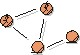

Artifacts >
Artifacts >
 Business Modeling Artifact Set >
Business Modeling Artifact Set >
 Business Object Model... >
Business Object Model... >
 Business Object Model
Business Object Model
Artifacts >
Business Modeling Artifact Set >
Business Object Model... >
Business Object Model
Artifact:
| ||||||||||||||||||||||||||||||||||||||||||
 Business Object Model |
The business object model is an object model describing the realization of business use cases. |
| UML representation: | Model, stereotyped as «business object model». |
| Role: | Business-Process Analyst |
| Optionality: | Can be excluded. |
| Sample Reports: | |
| More information: |
|
| Input to Activities: | Output from Activities: |
The following people use the business object model:
|
Property Name |
Brief Description |
UML Representation |
| Introduction | A textual description that serves as a brief introduction to the model. | Tagged value, of type "short text". |
| Organization Units | The packages in the model, representing a hierarchy. | Owned via the association "represents", or recursively via the aggregation "owns". |
| Business Workers | The business worker classes in the model, owned by the packages. | Owned recursively via the aggregation "owns". |
| Business Entities | The business entity classes in the model, owned by the packages. | - " - |
| Relationships | The relationships in the model, owned by the packages. | - " - |
| Business Use-Case Realizations | The business use-case realizations in the model, owned by the packages. | - " - |
| Diagrams | The diagrams in the model, owned by the packages. | - " - |
A business object model is created during inception and finalized during the elaboration phase.
A business-process analyst is responsible for the integrity of the business object model, ensuring that:
We have identified three main variants for tailoring the business object model:
See also Guidelines: Target-Organization Assessment.
You can choose to develop an "incomplete" business object model, focusing on explaining "things" and products important to the business domain. Such a model does not include the responsibilities people will carry, it only describes the information content of the organization. This is often referred to as a domain model. In such a case, you would stereotype the model as «domain model» instead of «business object model».
If the purpose of the business modeling effort is to do business reengineering, you should consider building two variants of the business object model: one that shows the current situation (as-is), and one that shows the envisioned new processes (to-be).
The as-is version of the business object model is simply an inventory of the business use-case realizations. The elements of the business object model are not described in any detail, typically brief descriptions are sufficient. The business use-case realizations can be documented with simple activity diagram, where swimlanes correspond to elements of the business object model.
If the business domain is well-understood by all members of the project team, the benefits of developing a business object model are significantly diminished. Where this occurs, the business object model may be omitted entirely.
The business object model is a way of expressing the business
processes in terms of responsibilities, deliverables, and collaborative behavior. Not producing a
business object model means you run the risk that developers will only give
superficial attention to the way business is done. They will do what they know
best, which is to design and create software in absence of business process
knowledge. The result can be that the systems that are built do not support the needs of the business.
|
Rational Unified
Process
|